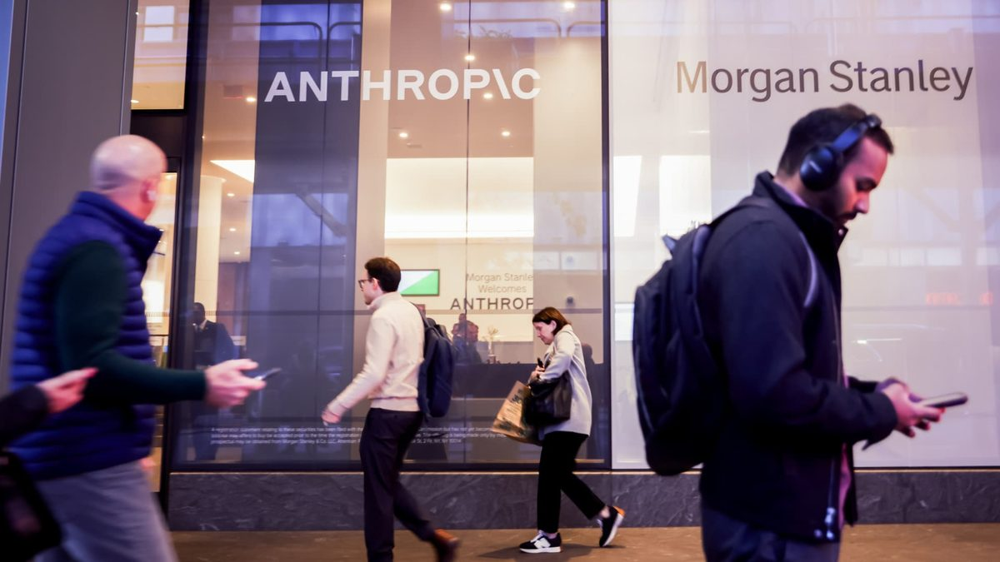

Anthropic henter 81 milliarder dollar – verdens største børsnotering nogensinde
Aktien blev prissat til 83 dollar, over intervallet, og handles fra i dag på Nasdaq under navnet ANT.

Anthropic og selskabets syv medstiftere solgte omkring 980 millioner aktier til 83 dollar stykket – over det forventede interval på 70-78 dollar og flere aktier end de planlagte 825 millioner. Det giver 81,3 mia. dollar og slår SpaceX, der i juni rejste 75 mia. (85,7 mia. efter overtildelingen En aftale, der lader bankerne sælge ekstra aktier, når efterspørgslen er stor. For SpaceX løftede den provenuet fra 75 til 85,7 mia. dollar.). Fuldt udvandet Værdien beregnet med alle aktier, inklusive optioner og andre rettigheder, der kan blive til aktier. Her giver det en samlet værdi på omkring 1.500 mia. dollar. er Claude-firmaet vurderet til omkring 1.500 mia. dollar.
Ifølge prospektet omsatte Anthropic for 33,24 mia. dollar i årets første ni måneder, op ca. 1.200 %, drevet især af Claude Code. Run-rate-omsætningen Den aktuelle månedsomsætning ganget op til et helt år. Her svarer 81 mia. dollar til, at Anthropic i oktober omsatte for omkring 6,75 mia. dollar. var omkring 81 mia. dollar ved udgangen af oktober. Nettounderskuddet var 104 mia. dollar, mest på grund af regnskabsmæssige værdireguleringer af konvertible lån.
Google, Microsoft, Nvidia og AMD investerer tilsammen 26 mia. dollar til introkursen, og Amazon og Google ejer hver andele til over 100 mia. dollar. Ifølge FT kalder SoftBanks Masayoshi Son det nu en »fejl«, at han ikke investerede i Anthropic.
Kilde: CNBC · Læs mere →